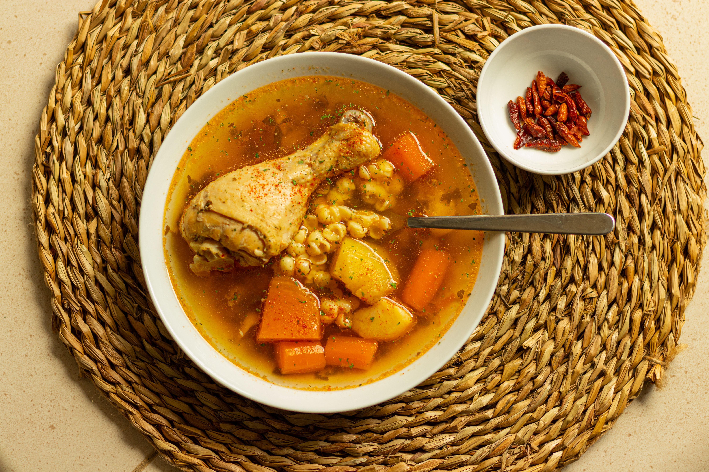

Home
Chicken Noodle Soup Recipe

Description
We are in soup season, which is both good and bad news for parents. The good news is that it's easy to make fast, healthy soups that kids tend to like. I've found soup, especially chicken noodle soup, to be a reliable dinnertime win.
Ingredients
- 8 ounces egg noodles
- 1 tablespoon melted butter
- 2 tablespoons olive oil
- 1 cup white onion, diced (1 medium onion)
- 1 cup celery, diced (about 2 stalks)
- 1 cup carrots, diced (2 medium carrots)
- 2 cloves garlic, minced
- 4 cups chicken stock, homemade or store bought
- 2 cups shredded chicken, from a store-bought rotisserie chicken
- Fresh parsley, for garnish
Directions
- Cook the noodles: Bring a large pot of lightly salted water to a boil and cook the egg noodles according to package directions. Strain and toss with butter.
- Meanwhile, cook the veggies: In a large pot, warm the olive oil over medium heat. Add onion, celery, and carrots. Cook for 4 to 5 minutes until vegetables soften. Then add garlic and season with salt and pepper. Cook for another minute.
- Add the stock and chicken: Add chicken stock and bring soup to a simmer. Stir in shredded chicken and simmer for a few minutes to combine flavors. Taste soup and season with salt and pepper.
- Assemble the soup: Divide the egg noodles among the bowls and spoon in the soup. Once the eggs are cool enough to handle, peel them carefully and slide them into the bowl on top of the soup. Garnish with fresh parsley and serve with crackers.
- Enjoy!